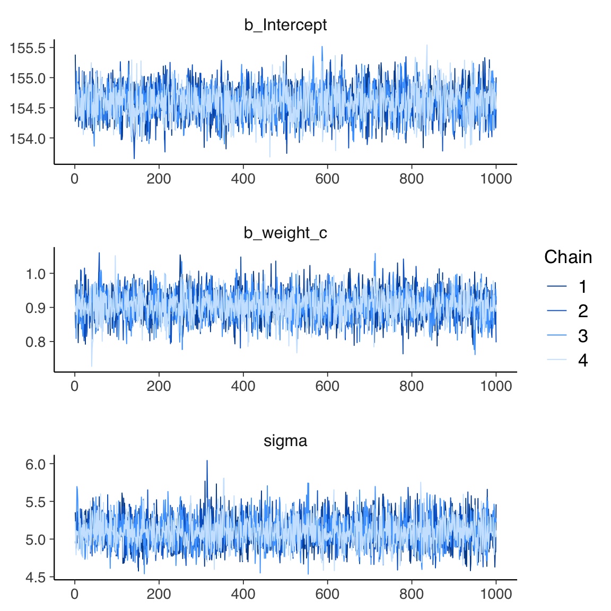
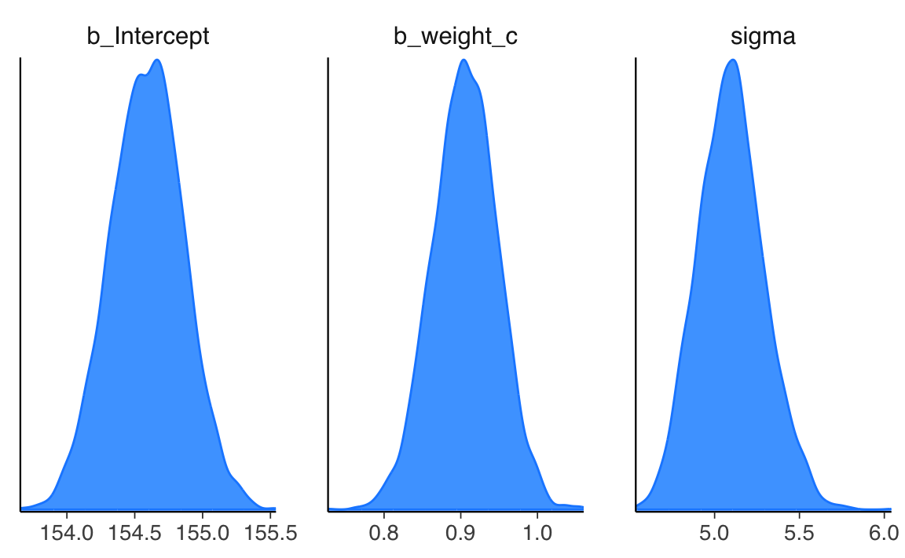
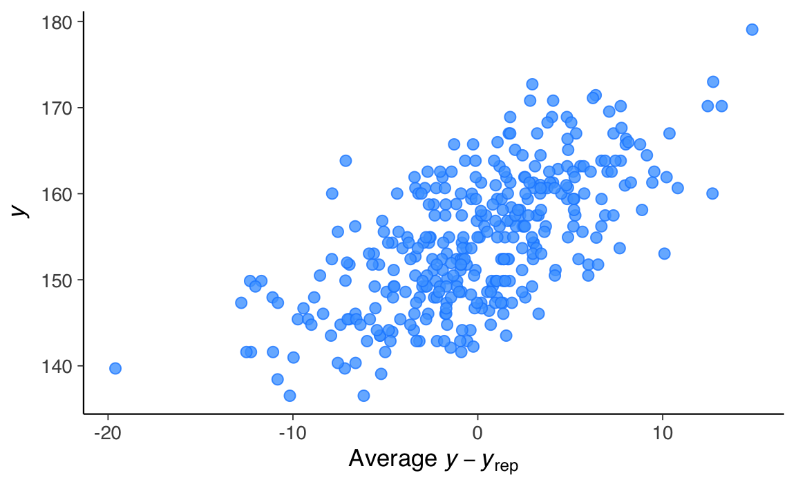

here::here("code", "_common.R") |>
source()
# Load packages
if (!requireNamespace("pacman")) install.packages("pacman")
pacman::p_load(brms, posterior, cmdstanr)55 Zucchero sintattico
In questo capitolo imparerai a
- utilizzare
brmper costruire e adattare modelli; - analizzare i risultati con
brm.
Prerequisiti
- Leggere Navigating the Bayes maze: The psychologist’s guide to Bayesian statistics, a hands-on tutorial with R code (Alter et al., 2025).
- Consultare The brms Book: Applied Bayesian Regression Modelling Using R and Stan.
Preparazione del Notebook
55.1 Introduzione
I modelli lineari sono così ampiamente utilizzati che sono stati sviluppati appositamente una sintassi, dei metodi e delle librerie per la regressione. Una di queste librerie è brms (Bayesian Regression Models using Stan), già introdotta nel Capitolo 54. brms è un pacchetto R progettato per adattare modelli gerarchici generalizzati lineari (di cui il modello lineare bivariato è un caso particolare), utilizzando una sintassi simile a quella presente nei pacchetti R, come lme4, nlme, rstanarm. brms si basa su Stan, ma offre un’API di livello superiore.
In questo capitolo esploreremo in maniera dettagliata come condurre un’analisi di regressione utilizzando brms invece di Stan.
55.2 Interfaccia brms
Per fare un esempio, applicheremo il modello di regressione bivariato alla relazione tra altezza e peso. I dati contenuti nel file Howell_18.csv sono parte di un censimento parziale della popolazione !Kung San dell’area di Dobe, raccolti tramite interviste condotte da Nancy Howell alla fine degli anni ’60 (McElreath, 2020). I !Kung San sono una delle popolazioni di raccoglitori-cacciatori più conosciute del ventesimo secolo e sono stati oggetto di numerosi studi antropologici. In questa analisi, consideriamo un sottocampione di dati relativi alla popolazione adulta (di età superiore ai 18 anni).
Importiamo i dati contenuti nel file Howell_18.csv.
df |>
head()
#> height weight age male
#> 1 152 47.8 63 1
#> 2 140 36.5 63 0
#> 3 137 31.9 65 0
#> 4 157 53.0 41 1
#> 5 145 41.3 51 0
#> 6 164 63.0 35 1Generiamo un diagramma a dispersione tra le variabili height (altezza) e weight (peso):
ggplot(df, aes(x = weight, y = height)) +
geom_point() +
labs(x = "Weight", y = "Height") brms si concentra sui modelli di regressione, e questa specializzazione permette di adottare una sintassi più semplice, conosciuta come sintassi di Wilkinson (Wilkinson & Rogers, 1973).
Ad esempio, il modello \(y = \alpha + \beta x + \varepsilon\) si implementa come segue:
a_model = brm(y ∼ 1 + x, data = df)Nella sintassi di Wilkinson, il simbolo tilde (∼) separa la variabile dipendente (a sinistra) dalle variabili indipendenti (a destra). In questo caso, stiamo specificando solo la media (\(\mu\)) della \(y\).
brms assume di default che la distribuzione di verosimiglianza sia gaussiana, ma è possibile modificarla tramite l’argomento family.
La notazione 1 si riferisce all’intercetta. L’intercetta viene inclusa di default. Per cui il modello precedente si può anche scrivere, in maniera equivalente, come
a_model = brm(y ∼ x, data = df)Se desideriaamo escludere l’intercetta dal modello, possiamo farlo in questo modo
no_intercept_model = brm(y ∼ 0 + x, data = df)oppure in questo modo
no_intercept_model = brm(y ∼ -1 + x, data = df)Per includere ulteriori variabili nel modello, possiamo procedere così:
model_2 = brm("y ∼ x + z", data)brms consente anche di includere effetti a livello di gruppo (gerarchici). Ad esempio, se desideriamo un modello ad effetti misti nel quale abbiamo un effetto diverso di \(x\) in ciascun gruppo g, possiamo usare la seguente sintassi:
model_h = brm(y ∼ x + z + (x | g), data = df)La sintassi di Wilkinson non specifica le distribuzioni a priori, ma solo come le variabili dipendenti e indipendenti sono collegate. brms definirà automaticamente delle distribuzioni a priori debolmente informative per noi, rendendo superflua la loro definizione esplicita. Tuttavia, se preferiamo avere un maggiore controllo, possiamo specificarle manualmente, come vedremo in seguito.
55.2.1 Centrare le Variabili
Per interpretare più facilmente l’intercetta, centriamo la variabile weight rispetto alla media del campione:
df$weight_c = df$weight - mean(df$weight)Ora, l’intercetta (\(\alpha\)) rappresenterà l’altezza media quando il peso corrisponde alla media del campione.
Adattiamo un modello lineare con la variabile weight centrata e esaminiamo i risultati:
fit_1 = brm(
bf(height ~ 1 + weight_c, center = FALSE),
data = df,
backend = "cmdstanr",
silent = 0
)Le tracce dei parametri si ottengono nel modo seguente:

summary(fit_1)
#> Family: gaussian
#> Links: mu = identity; sigma = identity
#> Formula: height ~ 1 + weight_c
#> Data: df (Number of observations: 352)
#> Draws: 4 chains, each with iter = 2000; warmup = 1000; thin = 1;
#> total post-warmup draws = 4000
#>
#> Regression Coefficients:
#> Estimate Est.Error l-95% CI u-95% CI Rhat Bulk_ESS Tail_ESS
#> Intercept 154.59 0.27 154.06 155.11 1.00 3947 2871
#> weight_c 0.91 0.04 0.82 0.99 1.00 3945 2996
#>
#> Further Distributional Parameters:
#> Estimate Est.Error l-95% CI u-95% CI Rhat Bulk_ESS Tail_ESS
#> sigma 5.10 0.20 4.74 5.51 1.00 4902 3275
#>
#> Draws were sampled using sample(hmc). For each parameter, Bulk_ESS
#> and Tail_ESS are effective sample size measures, and Rhat is the potential
#> scale reduction factor on split chains (at convergence, Rhat = 1).La stima dell’intercetta \(\alpha\) = 154.60 suggerisce che, per le persone con un peso corrispondente al valore medio del campione analizzato, l’altezza prevista è di 154.60 cm.
Possiamo confrontare i risultati ottenuti da brm() con quelli prodotti dall’appriccio frequentista:
fit_2 <- lm(height ~ 1 + weight_c, data = df)summary(fit_2)
#>
#> Call:
#> lm(formula = height ~ 1 + weight_c, data = df)
#>
#> Residuals:
#> Min 1Q Median 3Q Max
#> -19.746 -2.884 0.022 3.142 14.774
#>
#> Coefficients:
#> Estimate Std. Error t value Pr(>|t|)
#> (Intercept) 154.597 0.271 570.2 <2e-16
#> weight_c 0.905 0.042 21.5 <2e-16
#>
#> Residual standard error: 5.09 on 350 degrees of freedom
#> Multiple R-squared: 0.57, Adjusted R-squared: 0.568
#> F-statistic: 463 on 1 and 350 DF, p-value: <2e-16Anche in questo caso, l’uso di prior debolmente informativi fa in modo che i risultati dei due approcci siano praticamente equivalenti.
55.2.2 Visualizzazione dei Risultati
Per comprendere la relazione stimata, utilizziamo la funzione conditional_effects:
conditional_effects(fit_1, effects = "weight_c")Il grafico generato mostra:
- Media posteriore: La linea rappresenta la stima centrale dell’altezza per un dato peso.
- Intervallo di densità più alta (HDI): L’area evidenziata intorno alla linea mostra l’incertezza delle stime con un intervallo di probabilità del 95%.
Se si desidera modificare la percentuale dell’intervallo di credibilità, è possibile farlo utilizzando l’argomento prob, per esempio:
conditional_effects(fit_1, effects = "weight_c", prob = 0.89)55.3 Distribuzione a Posteriori dei Parametri
Per esaminare la distribuzione a posteriori dei parametri usiamo la funzione mcmc_plot():
mcmc_plot(fit_1, type = "dens")
Esaminiamo in maggiori dettagli il sommario numerico dei parametri stimati:
draws <- posterior::as_draws(fit_1, variable = "^b_", regex = TRUE)
posterior::summarise_draws(draws, "mean", "sd", "mcse_mean", "mcse_sd")
#> # A tibble: 2 × 5
#> variable mean sd mcse_mean mcse_sd
#> <chr> <dbl> <dbl> <dbl> <dbl>
#> 1 b_Intercept 155. 0.269 0.00428 0.00391
#> 2 b_weight_c 0.906 0.0423 0.000675 0.000681Utilizziamo la funzione as_draws() che trasforma un oggetto R in un formato compatibile con posterior. Gli argomenti variable = "^b_" e regex = TRUEconsentono di selezionare solo i parametri il cui nome inizia con b_: nel nostro caso saranno l’intercetta e la pendenza del modello di regressione lineare.
Successivamente usiamo la funzione summarise_draws() con gli argomenti specificati per un sommario della distribuzione a posteriori dei parametri prescelti.
55.3.1 Spiegazione di mcse_mean e mcse_sd
I valori mcse_mean e mcse_sd sono le Monte Carlo Standard Errors (errori standard Monte Carlo) per la stima della media (mean) e della deviazione standard (sd), rispettivamente. Questi valori quantificano l’incertezza associata al processo di campionamento effettuato durante l’analisi bayesiana, in particolare quando si utilizzano algoritmi Monte Carlo come MCMC (Markov Chain Monte Carlo).
55.3.1.1 mcse_mean
- Rappresenta l’errore standard Monte Carlo per la stima della media.
- Indica quanto la media stimata (\(\text{mean}\)) potrebbe variare a causa della finitezza dei campioni generati dall’algoritmo MCMC.
- Un valore di
mcse_meanbasso rispetto alla deviazione standard (\(\text{sd}\)) suggerisce che il numero di campioni generati è sufficiente per ottenere una stima accurata della media.
55.3.1.2 mcse_sd
- Rappresenta l’errore standard Monte Carlo per la stima della deviazione standard.
- Indica quanto potrebbe variare la stima della deviazione standard (\(\text{sd}\)) a causa del numero finito di campioni generati.
- Anche qui, un valore basso di
mcse_sdrispetto allasdsuggerisce che l’incertezza introdotta dal campionamento è trascurabile.
55.3.2 Come interpretarli?
-
Proporzione rispetto alla
sd:-
mcse_meanemcse_sddovrebbero essere molto più piccoli rispetto ai rispettivi parametri (meanesd), idealmente almeno un ordine di grandezza inferiore. - Ad esempio, per
b_Intercept,mcse_mean= 0.0044 è molto più piccolo rispetto asd= 0.2695, indicando che la stima della media è robusta.
-
-
Indicazione della qualità del campionamento:
- Valori alti di
mcse_meanomcse_sdrispetto allasdpotrebbero indicare che il numero di iterazioni MCMC non è sufficiente, che le catene non sono ben mescolate o che ci sono problemi di convergenza.
- Valori alti di
In sintesi, mcse_mean e mcse_sd sono utili per valutare l’affidabilità delle stime derivate dal campionamento Monte Carlo. Se questi valori sono bassi, possiamo essere confidenti che il numero di campioni è sufficiente per rappresentare accuratamente la distribuzione a posteriori.
55.4 Specificare i Priors
Se vogliamo personalizzare i priors, possiamo utilizzare la funzione get_prior per esplorare quelli predefiniti:
get_prior(height ~ 1 + weight_c, data = df)
#> prior class coef group resp dpar nlpar lb ub
#> student_t(3, 154.3, 8.5) Intercept
#> (flat) b
#> (flat) b weight_c
#> student_t(3, 0, 8.5) sigma 0
#> source
#> default
#> default
#> (vectorized)
#> default-
prior: descrive il prior predefinito assegnato a ciascun parametro del modello. Ad esempio:-
student_t(3, 154.3, 8.5): prior t di Student per l’intercetta con 3 gradi di libertà, una media di 154.3, e una scala di 8.5. -
(flat): prior piatto (non informativo) per i coefficienti delle variabili predittive, come \(b\) e \(b_{weight_c}\). -
student_t(3, 0, 8.5): prior t di Student per il parametro \(\sigma\) (deviazione standard residua), centrato su 0 con una scala di 8.5.
-
-
class: identifica la classe di parametro a cui il prior si applica:-
Intercept: prior per l’intercetta (\(\alpha\)). -
b: prior per i coefficienti delle variabili predittive (\(\beta\)). -
sigma: prior per il parametro della deviazione standard residua (\(\sigma\)).
-
-
coef: specifica a quale predittore si riferisce il prior, se applicabile. Ad esempio:- Vuoto per l’intercetta (poiché non dipende da un predittore specifico).
-
weight_cper il coefficiente relativo al predittoreweight_c.
-
lbeub: rappresentano rispettivamente i limiti inferiori (lower bound) e superiori (upper bound) per il prior, se specificati. Ad esempio:- Per
sigma, il limite inferiore è \(0\), dato che la deviazione standard non può essere negativa.
- Per
-
source: indica l’origine del prior. Se il prior è predefinito (default), il valore saràdefault. Se un prior è specificato manualmente dall’utente, sarà indicato come tale.
Ora impostiamo priors espliciti e adattiamo un nuovo modello:
prior_guassian <-
prior(normal(160, 10), class = "b", coef = "Intercept") +
prior(normal(0, 5), class = "b", coef = "weight_c") +
prior(cauchy(0, 5), class = "sigma")fit_2 = brm(
bf(height ~ 1 + weight_c, center = FALSE),
prior = prior_guassian,
data = df,
backend = "cmdstanr",
silent = 0
)Otteniamo un sommario numerico dei parametri stimati:
draws <- posterior::as_draws(fit_2, variable = "^b_", regex = TRUE)
posterior::summarise_draws(draws, "mean", "sd", "mcse_mean", "mcse_sd")
#> # A tibble: 2 × 5
#> variable mean sd mcse_mean mcse_sd
#> <chr> <dbl> <dbl> <dbl> <dbl>
#> 1 b_Intercept 155. 0.274 0.00445 0.00425
#> 2 b_weight_c 0.906 0.0436 0.000661 0.000697I prior che abbiamo specificato non cambiano in maniera rilevante la soluzione a posteriori.
55.5 Predizioni Predittive a Posteriori
Un aspetto fondamentale nella valutazione di un modello statistico, sia frequentista che bayesiano, è verificare quanto bene i dati osservati siano rappresentati dalle predizioni del modello. Tuttavia, l’approccio e l’interpretazione differiscono tra i due paradigmi.
55.5.1 Confronto Frequentista
Nel caso frequentista, si confrontano i valori predetti dal modello, \(\hat{y} = \hat{\alpha} + \hat{\beta}x\), con i dati osservati. Questo confronto si basa sull’analisi di: - La vicinanza della retta di regressione stimata ai dati osservati. - L’eventuale presenza di pattern nei dati che si discostano da un andamento lineare. - La variazione della dispersione dei valori di \(y\) rispetto a \(x\) (ad esempio, per verificare l’ipotesi di omoschedasticità).
55.5.2 Approccio Bayesiano
Nell’approccio bayesiano, si eseguono le stesse verifiche di base, ma l’analisi si arricchisce attraverso l’uso delle Predizioni Predittive a Posteriori (Posterior Predictive Checks, PPCs). Questo metodo consente di confrontare i dati osservati con dati simulati dal modello, utilizzando l’incertezza stimata nelle distribuzioni a posteriori dei parametri.
55.5.3 Costruzione delle Predizioni Predittive a Posteriori
Nel caso di un modello bivariato, il processo per generare un grafico delle Predizioni Predittive a Posteriori è il seguente:
Dati osservati: Si parte dall’istogramma lisciato dei dati osservati, che rappresenta la distribuzione empirica di \(y\).
-
Simulazione di dati predetti:
- Si estrae un campione casuale di valori \(\alpha'\), \(\beta'\), e \(\sigma'\) dalle distribuzioni a posteriori dei parametri (\(\alpha\), \(\beta\), e \(\sigma\)).
- Usando questi valori, si calcolano dati simulati da una distribuzione normale: \[ y_{\text{sim}} \sim \mathcal{N}(\alpha' + \beta'x, \sigma') \] dove \(x\) sono i valori predittori osservati.
Creazione di istogrammi: Per ogni campione simulato, si costruisce un istogramma lisciato che rappresenta la distribuzione predetta dal modello.
Ripetizione: Il processo viene ripetuto più volte, generando molti istogrammi lisciati.
Confronto: Tutti gli istogrammi predetti vengono sovrapposti all’istogramma dei dati osservati. Questo consente di confrontare visivamente la capacità del modello di rappresentare la distribuzione dei dati.
55.5.4 Interpretazione
- Buona corrispondenza: Se gli istogrammi lisciati dei dati simulati si sovrappongono bene all’istogramma dei dati osservati, significa che il modello è in grado di rappresentare adeguatamente il campione corrente.
- Discrepanze: Se vi sono discrepanze sistematiche (ad esempio, picchi o code mancanti nei dati predetti rispetto agli osservati), ciò indica che il modello potrebbe non essere adeguato o che vi sono aspetti dei dati non catturati dal modello.
L’approccio delle Predizioni Predittive a Posteriori è particolarmente potente perché:
- Integra l’incertezza nei parametri del modello.
- Permette di verificare non solo la bontà di adattamento complessiva, ma anche specifici aspetti delle distribuzioni predette.
- È visivo e intuitivo, facilitando l’identificazione di discrepanze tra modello e dati.
In conclusione, le Predizioni Predittive a Posteriori forniscono un modo robusto per valutare l’adeguatezza di un modello bayesiano rispetto ai dati osservati. Se il modello riproduce bene la distribuzione dei dati osservati, si può concludere che è adatto almeno per il campione corrente. In caso contrario, potrebbe essere necessario rivedere le specifiche del modello, come i priors o la struttura delle variabili.
Verifichiamo dunque le predizioni del modello confrontandole con i dati osservati del campione corrente:
pp_check(fit_2)
#> Using 10 posterior draws for ppc type 'dens_overlay' by default.Nel caso presente, vi è una buona corrispondenza tra i dati simulati dal modello e i dati osservati.
Il grafico seguente analizza gli errori del modello rispetto alla retta di regressione stimata.
pp_check(fit_1, type = "error_scatter_avg")
#> Using all posterior draws for ppc type 'error_scatter_avg' by default.
Questo comando utilizza la funzione pp_check() per produrre un grafico che mostra i residui bayesiani, ovvero le differenze tra i dati osservati e quelli predetti dal modello. Nel tipo specifico di grafico scelto ("error_scatter_avg"), i residui sono rappresentati rispetto ai valori predetti, consentendo di valutare visivamente se sono distribuiti in modo uniforme.
Dal grafico, si osserva che i residui bayesiani appaiono distribuiti in modo omogeneo rispetto alla retta di regressione (che non è direttamente mostrata nel grafico). Questo suggerisce che:
- Il modello cattura correttamente la relazione tra la variabile predittiva e la variabile di risposta.
- Non ci sono pattern sistematici nei residui, come deviazioni non lineari o variazioni della dispersione (eteroschedasticità).
Se fossero presenti pattern evidenti nei residui (ad esempio, una struttura curva o una variazione sistematica della dispersione), ciò indicherebbe che il modello potrebbe non essere adeguato, richiedendo una rivalutazione della sua struttura (ad esempio, aggiungendo termini non lineari o trasformando le variabili).
55.6 Regressione Robusta
In questa sezione introduciamo la regressione robusta. Lo scopo è quello di mostrare quanto sia facile modificare il modello definito da brm per specificare una diversa distribuzione degli errori. Questo non è possibile nel caso dell’approccio frequentista.
I modelli robusti sono utili in presenza di outlier. Ad esempio, introduciamo un outlier nei dati:
df_outlier <- df
df_outlier$height[1] <- 200
df_outlier$weight_c[1] <- -15df_outlier |>
ggplot(aes(x = weight_c, y = height)) +
geom_point() +
labs(x = "Weight", y = "Height") Notiamo come la presenza di un solo outlier introduce una distorsione nei risultati:
fit_3 = brm(
bf(height ~ 1 + weight_c, center = FALSE),
prior = prior_guassian,
data = df_outlier,
backend = "cmdstanr",
silent = 0
)draws <- posterior::as_draws(fit_3, variable = "^b_", regex = TRUE)
posterior::summarise_draws(draws, "mean", "sd", "mcse_mean", "mcse_sd")
#> # A tibble: 2 × 5
#> variable mean sd mcse_mean mcse_sd
#> <chr> <dbl> <dbl> <dbl> <dbl>
#> 1 b_Intercept 155. 0.319 0.00488 0.00496
#> 2 b_weight_c 0.846 0.0483 0.000810 0.000734Adattiamo ora un modello robusto utilizzando una distribuzione \(t\) di Student:
fit_4 = brm(
bf(height ~ 1 + weight_c, center = FALSE),
prior = prior_guassian,
family = student(),
data = df_outlier,
backend = "cmdstanr",
silent = 0
)I risultati mostrano che il modello \(t\) è meno influenzato dagli outlier rispetto al modello gaussiano.
draws <- posterior::as_draws(fit_4, variable = "^b_", regex = TRUE)
posterior::summarise_draws(draws, "mean", "sd", "mcse_mean", "mcse_sd")
#> # A tibble: 2 × 5
#> variable mean sd mcse_mean mcse_sd
#> <chr> <dbl> <dbl> <dbl> <dbl>
#> 1 b_Intercept 155. 0.273 0.00447 0.00495
#> 2 b_weight_c 0.920 0.0415 0.000652 0.000777Il parametro \(\nu\) della \(t\) di Student viene stimato dal modello. Nel caso presente
draws <- posterior::as_draws(fit_4, variable = "nu")
posterior::summarise_draws(draws, "mean", "sd", "mcse_mean", "mcse_sd")
#> # A tibble: 1 × 5
#> variable mean sd mcse_mean mcse_sd
#> <chr> <dbl> <dbl> <dbl> <dbl>
#> 1 nu 6.16 1.68 0.0294 0.0353Con un parametro \(\nu\) = 6, la \(t\) di Student ha delle “code” molto maggiori di una gaussiana, e questo le consene di “assorbire” gli outliers in maniera maggiore che la gaussiana.
55.7 Indice di Determinazione Bayesiano
Con il pacchetto brms, possiamo calcolare il Bayes \(R^2\), che rappresenta l’equivalente bayesiano del classico indice di determinazione \(R^2\). Questo indice quantifica la proporzione di varianza spiegata dal modello, tenendo conto dell’incertezza intrinseca delle stime bayesiane.
Il comando per calcolarlo è:
bayes_R2(fit_4)
#> Estimate Est.Error Q2.5 Q97.5
#> R2 0.5 0.0208 0.457 0.537Il comando restituisce un tibble (una tabella ordinata) con le seguenti informazioni:
- Estimate: La stima media del Bayes \(R^2\), cioè la proporzione di varianza spiegata dal modello, basata sulle distribuzioni a posteriori dei parametri.
- Est.Error: L’errore standard associato alla stima del \(R^2\).
- Q2.5 e Q97.5: I limiti inferiore e superiore dell’intervallo di credibilità al 95% per il Bayes \(R^2\). Questi valori indicano l’incertezza sul \(R^2\), riflettendo la distribuzione a posteriori.
Nel caso presente
- Stima del \(R^2\): Il modello spiega in media circa il 50% della varianza osservata nella variabile dipendente.
- Errore Standard: L’incertezza sulla stima è relativamente bassa (±0.02).
- Intervallo di Credibilità: C’è un 95% di probabilità che il vero valore del \(R^2\) si trovi tra 0.457 e 0.537.
55.7.1 Differenze rispetto al Frequentista \(R^2\)
- Incertezza: Il Bayes \(R^2\) include un’intera distribuzione a posteriori, permettendo di rappresentare l’incertezza attraverso l’intervallo di credibilità. Questo non è possibile con il \(R^2\) frequentista, che fornisce una stima puntuale.
- Priors: Il Bayes \(R^2\) è influenzato dai priors scelti per i parametri del modello, il che consente una maggiore flessibilità e incorpora conoscenze preesistenti.
In conclusione, il Bayes \(R^2\) è uno strumento potente per valutare l’adattamento di un modello bayesiano, permettendo di quantificare non solo la proporzione di varianza spiegata, ma anche l’incertezza associata alla stima.
55.8 Riflessioni conclusive
Questo capitolo ha mostrato come utilizzare brms per costruire e interpretare modelli lineari, evidenziando le sue capacità di gestione dei priors, diagnostica e modellizzazione robusta. Grazie alla sua semplicità e flessibilità, brms rappresenta un potente strumento per l’inferenza bayesiana.
Informazioni sull’Ambiente di Sviluppo
sessionInfo()
#> R version 4.4.2 (2024-10-31)
#> Platform: aarch64-apple-darwin20
#> Running under: macOS Sequoia 15.2
#>
#> Matrix products: default
#> BLAS: /Library/Frameworks/R.framework/Versions/4.4-arm64/Resources/lib/libRblas.0.dylib
#> LAPACK: /Library/Frameworks/R.framework/Versions/4.4-arm64/Resources/lib/libRlapack.dylib; LAPACK version 3.12.0
#>
#> locale:
#> [1] C/UTF-8/C/C/C/C
#>
#> time zone: Europe/Rome
#> tzcode source: internal
#>
#> attached base packages:
#> [1] stats graphics grDevices utils datasets methods base
#>
#> other attached packages:
#> [1] rstan_2.32.6 StanHeaders_2.32.10 cmdstanr_0.8.1
#> [4] posterior_1.6.0.9000 brms_2.22.0 Rcpp_1.0.14
#> [7] ggokabeito_0.1.0 see_0.9.0 gridExtra_2.3
#> [10] patchwork_1.3.0 bayesplot_1.11.1 psych_2.4.12
#> [13] scales_1.3.0 markdown_1.13 knitr_1.49
#> [16] lubridate_1.9.4 forcats_1.0.0 stringr_1.5.1
#> [19] dplyr_1.1.4 purrr_1.0.2 readr_2.1.5
#> [22] tidyr_1.3.1 tibble_3.2.1 ggplot2_3.5.1
#> [25] tidyverse_2.0.0 rio_1.2.3 here_1.0.1
#>
#> loaded via a namespace (and not attached):
#> [1] tidyselect_1.2.1 farver_2.1.2 loo_2.8.0
#> [4] R.utils_2.12.3 fastmap_1.2.0 tensorA_0.36.2.1
#> [7] pacman_0.5.1 digest_0.6.37 timechange_0.3.0
#> [10] estimability_1.5.1 lifecycle_1.0.4 processx_3.8.5
#> [13] magrittr_2.0.3 compiler_4.4.2 rlang_1.1.4
#> [16] tools_4.4.2 utf8_1.2.4 yaml_2.3.10
#> [19] data.table_1.16.4 labeling_0.4.3 bridgesampling_1.1-2
#> [22] htmlwidgets_1.6.4 curl_6.1.0 pkgbuild_1.4.5
#> [25] mnormt_2.1.1 plyr_1.8.9 abind_1.4-8
#> [28] withr_3.0.2 R.oo_1.27.0 grid_4.4.2
#> [31] stats4_4.4.2 inline_0.3.21 xtable_1.8-4
#> [34] colorspace_2.1-1 emmeans_1.10.6 cli_3.6.3
#> [37] mvtnorm_1.3-3 rmarkdown_2.29 generics_0.1.3
#> [40] RcppParallel_5.1.9 reshape2_1.4.4 tzdb_0.4.0
#> [43] parallel_4.4.2 matrixStats_1.5.0 vctrs_0.6.5
#> [46] V8_6.0.0 Matrix_1.7-1 jsonlite_1.8.9
#> [49] hms_1.1.3 glue_1.8.0 codetools_0.2-20
#> [52] ps_1.8.1 distributional_0.5.0 stringi_1.8.4
#> [55] gtable_0.3.6 QuickJSR_1.5.1 munsell_0.5.1
#> [58] pillar_1.10.1 htmltools_0.5.8.1 Brobdingnag_1.2-9
#> [61] R6_2.5.1 rprojroot_2.0.4 evaluate_1.0.3
#> [64] lattice_0.22-6 R.methodsS3_1.8.2 backports_1.5.0
#> [67] rstantools_2.4.0 coda_0.19-4.1 nlme_3.1-166
#> [70] checkmate_2.3.2 xfun_0.50 pkgconfig_2.0.3Bibliografia
McElreath, R. (2020). Statistical rethinking: A Bayesian course with examples in R and Stan (2nd Edition). CRC Press.
Wilkinson, G., & Rogers, C. (1973). Symbolic description of factorial models for analysis of variance. Journal of the Royal Statistical Society Series C: Applied Statistics, 22(3), 392–399.